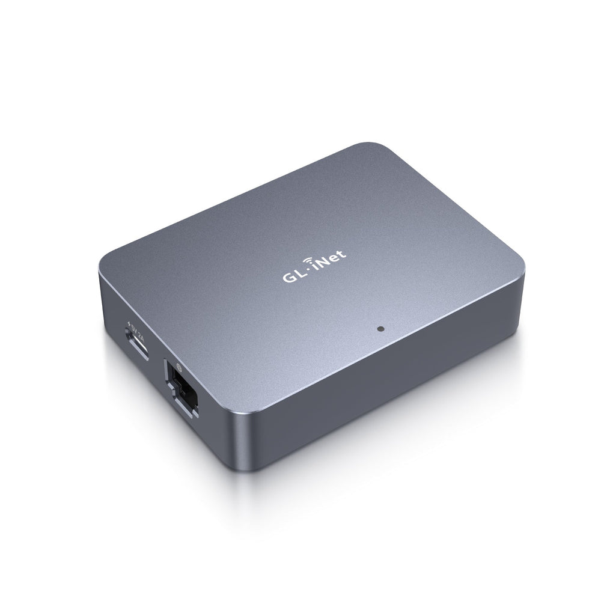
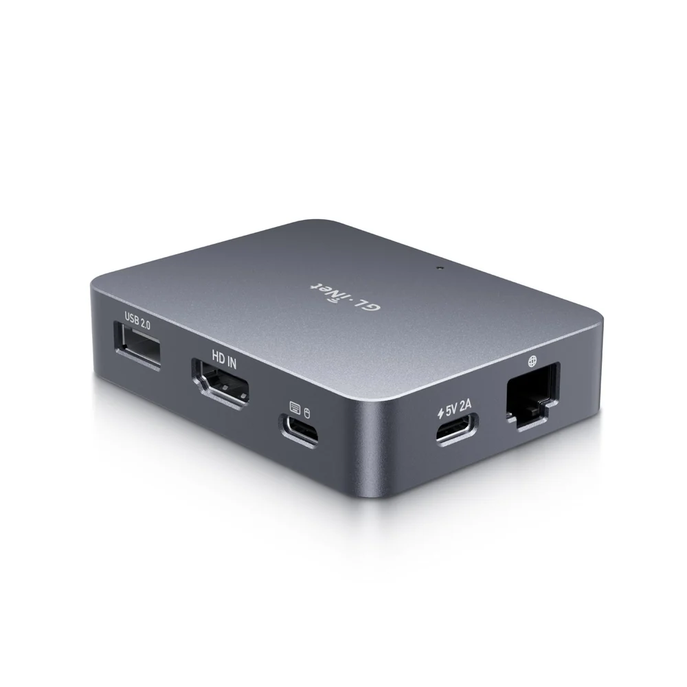
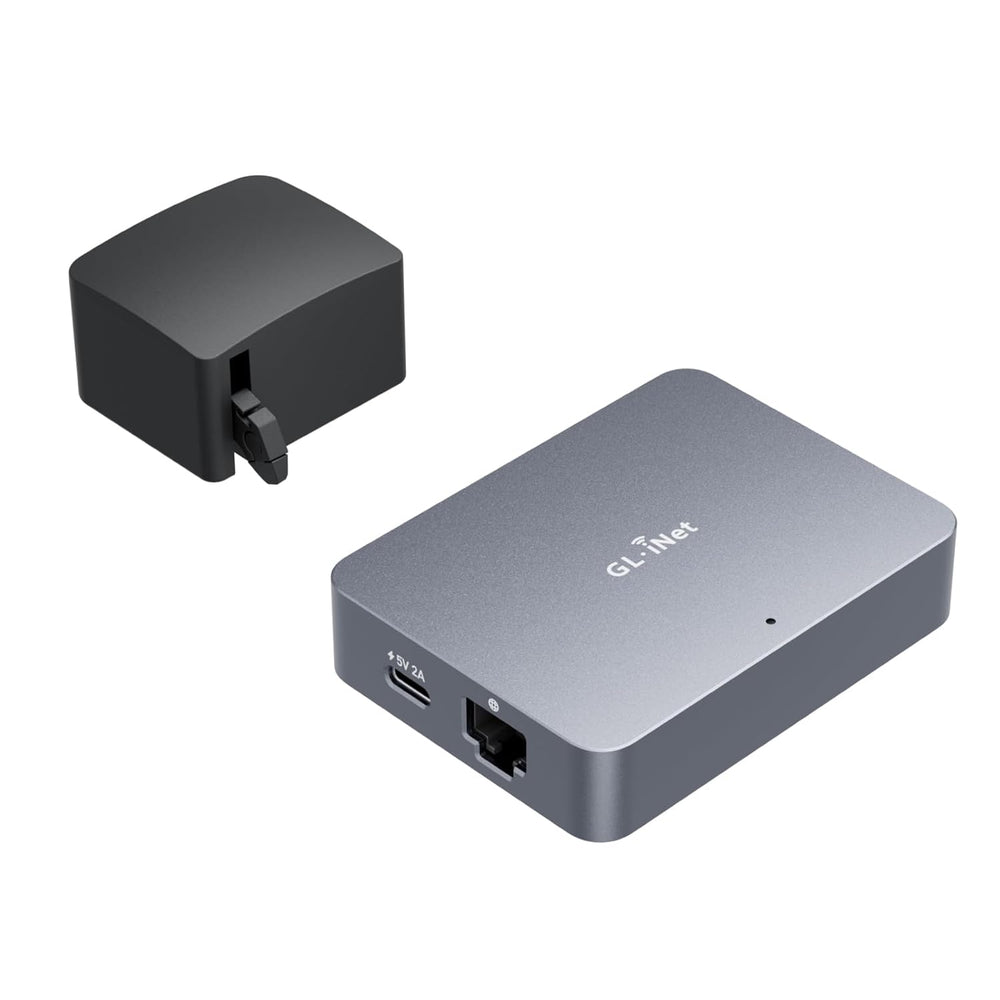

Home Lab | GLiNET Comet KVM

I recently picked up some new hardware for the Home Lab. 🥼
I am away from where I keep my Home Lab hardware fairly often, and from time to time I need direct console access to one of my ESX hosts. That could be for troubleshooting a boot issue, making a BIOS change, working through a network problem, or handling something that cannot be done through the normal management interfaces.
I have looked at the JetKVM several times but never ended up purchasing one.
During a recent trip to a MicroCenter store, I noticed they had the GLiNET Comet KVM on sale ($89.99). I decided to pick one up and test it in the Home Lab.
Setup was very simple, and so far the performance has been good. I frequently connect back to my Home Lab remotely using a StarLink connection and Twingate Remote Access, and the Comet has worked very well over that connection.
For me, the real value is having another layer of remote access when something goes wrong. If an ESX host is unavailable through vCenter, SSH, or the normal management network, I can still get to the console and see exactly what is happening.
That is especially useful in a Home Lab where the hardware may be sitting somewhere that is not always easy to get to.
When I find hardware that works well in my Home Lab, I like to share it with others. Home Lab hardware continues to get more expensive, so I think it is useful to share products that I have actually purchased, tested, and used in a real environment.
Also, if you see me blog about hardware, it is not because I am trying to earn affiliate dollars. I do not use affiliate links. I simply like sharing hardware and tools that work well in my own Home Lab and might help someone else building or maintaining theirs.
During Amazon's October Prime Big Deal Days, I picked up three more GLiNET Comet KVMs for $79.99 each 💵.
To power ⚡️ the KVMs, I have them connected directly to USB ports on the ESX servers in the rack. For example, the KVM connected to ESX-01 gets its power from a USB port on ESX-02, and so forth.
This eliminates the need for additional power adapters 🔌 and cables in the rack, and so far the setup has been working well.

Login Screen:

The Virtual Keyboard is nice for using the F2/F11/F12 keys:

You can Name the Browser Tab to match the ESX Host you are connecting to:

There is a Fingerbot for Remote Power Control & Boot from Shutdown. I want to try one of these #soon.

Overall, I am very happy with this product and would buy it again. I may also add a few more to my Home Lab for use with my Raspberry Pi's. 👍🏻